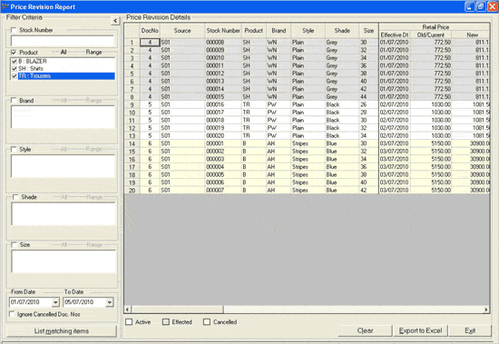

This report gives details of all price revisions created in the system for selected items in the specified date range. The report can be filtered for a particular stock number or combination of the five basic item classifications. The information on cancelled price revisions can be ignored in the report. Details include Document Number, Source, Stock Details, Retail Price and Dealer Price (revision effective from, old/ current and new price), Status (effected, active or cancelled), Shoper date, System date, User ID, Effected from date, etc. Active, Effected and Cancelled price revisions details are marked with different background colours. You may export the report to Excel.
How to reach: Catalogue > Listings > Price Revision
The price revision report window is displayed.
